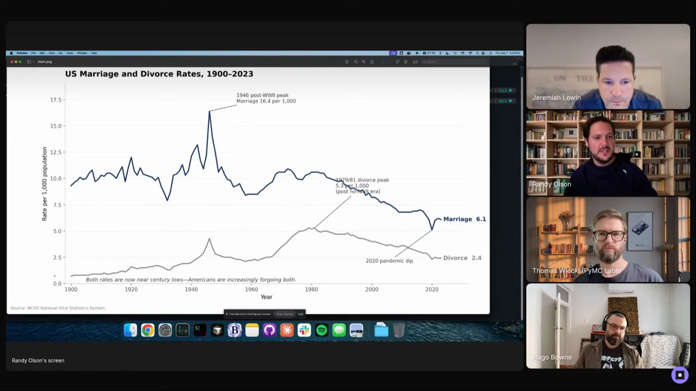

Set up before you start
Put an environment phase at the front of the skill. "If you need an environment set up, you can just tell it, 'Run these commands.'" No mid-run dependency crashes.
 RANDY OLSON
GOODEYE LABS
R/DATAISBEAUTIFUL
TUFTE TEST
TOUCHING GRASS
RANDY OLSON
GOODEYE LABS
R/DATAISBEAUTIFUL
TUFTE TEST
TOUCHING GRASS
Randy is teaching an agent his data visualization judgment: how to research, what makes a chart good, and how to check its own work with an LLM judge applying Tufte's principles to the image. He runs the skill every morning and makes it better after every run.

"What popped out was honestly unimpressive. And then that's when I realized, oh, I have to encode still what makes for a good data visualization, at least in my opinion." The skill carries the taste Randy built over years of making data topics accessible: no chart junk, a clear story, clear annotations, straightforward color, and research biased toward CDC, government, and educational sources.
One line in, one chart out: the agent researches the web, turns scattered sources into a dataset, tries several chart types, checks the result with code and an LLM judge, and opens chart.png for Randy's review. The taste that can't be encoded yet, like catching "this freaking overlap," stays his job.
Inside the skill: the full SKILL.md, how to run it in Claude Code, and how to swap in your own taste.

"You don't want to just tell it what to do, you also want to tell it how to check it."
"They're too agreeable by default, and you really have to fight them to get them to not be agreeable."
Put an environment phase at the front of the skill. "If you need an environment set up, you can just tell it, 'Run these commands.'" No mid-run dependency crashes.
Long skills decompose into per-phase reference files behind progressive disclosure. A run that starts at phase four doesn't carry phases one through three in context.
Exact steps, exact commands, exact code snippets: "the more specific you can be in your skill, the more repeatable it is in the future."
The final phase asks how the run went and what to fix. "Every single run, you're learning something new and putting it into the skill. It's compounding."
"I would love it if they trained on my skill and then we didn't need the skill anymore."